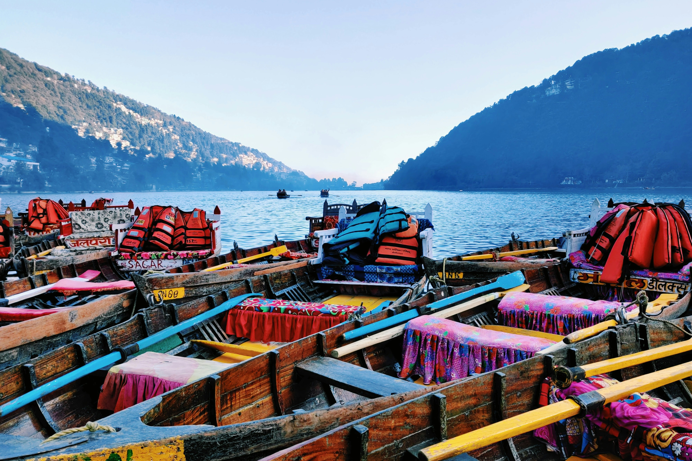
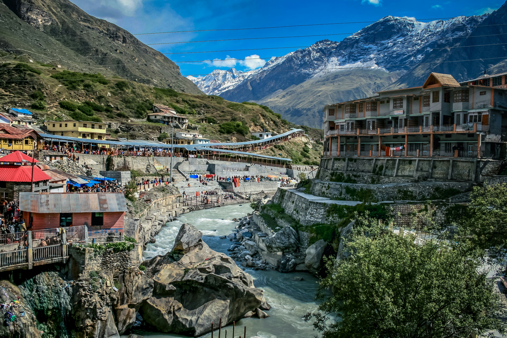
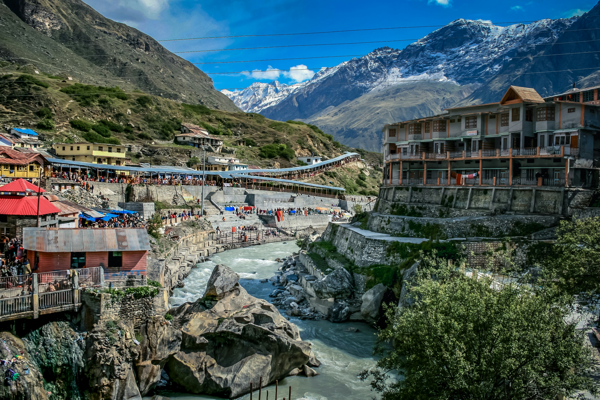

About Uttarakhand :
Uttarakhand, a state in northern India crossed by the Himalayas, is known for its Hindu pilgrimage sites. Rishikesh, a major centre for yoga study, was made famous by the Beatles’ 1968 visit. The city hosts the evening Ganga Aarti, a spiritual gathering on the sacred Ganges River. The state's forested Jim Corbett National Park shelters Bengal tigers and other native wildlife.
Images :
 


History Of Uttarakhand :
Uttarakhand , formerly known as Uttaranchal ; the official name until 2007, is a state in northern India. It is often referred to as the "Devbhumi" ('Land of the Gods')due to its religious significance and numerous Hindu temples and pilgrimage centres found throughout the state. Uttarakhand is known for the natural environment of the Himalayas, the Bhabar and the Terai regions. It borders the Tibet Autonomous Region of China to the north; the Sudurpashchim Province of Nepal to the east; the Indian states of Uttar Pradesh to the south and Himachal Pradesh to the west and north-west. The state is divided into two divisions, Garhwal and Kumaon, with a total of 13 districts. The winter capital and largest city of the state is Dehradun, which is also a railhead. On 5 March 2020, Bhararisain, a town in the Gairsain Tehsil of the Chamoli district, was declared as the summer capital of Uttarakhand. The High Court of the state is located in Nainital, but is to be moved to Haldwani in future.